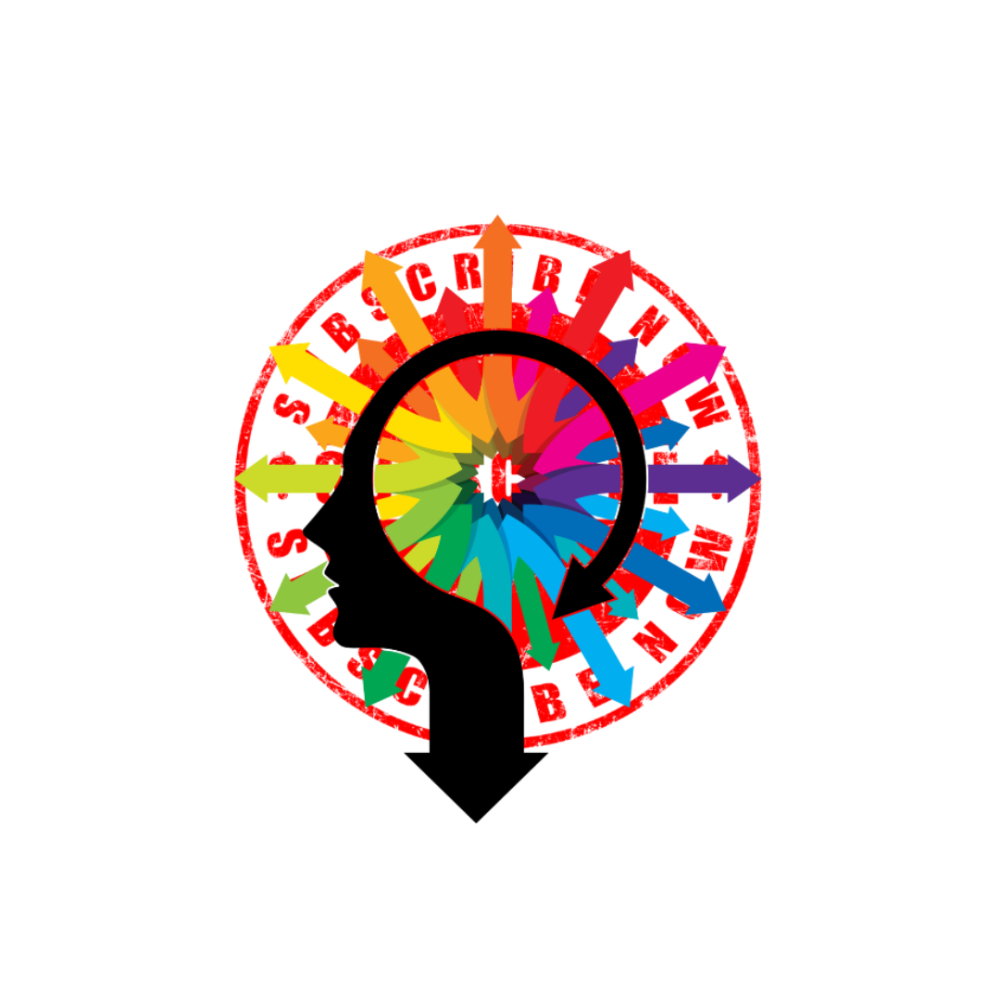
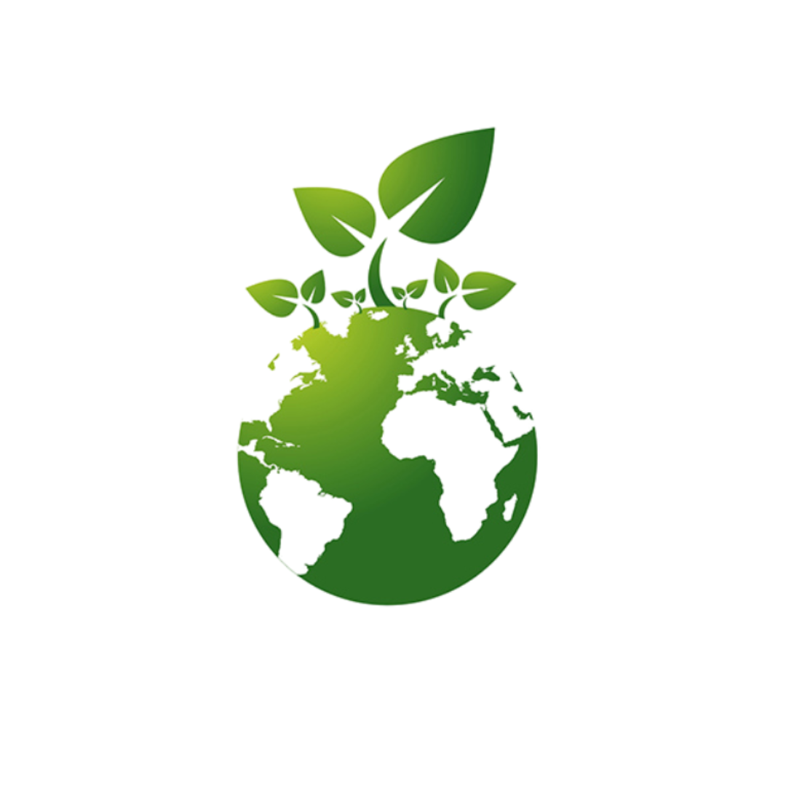
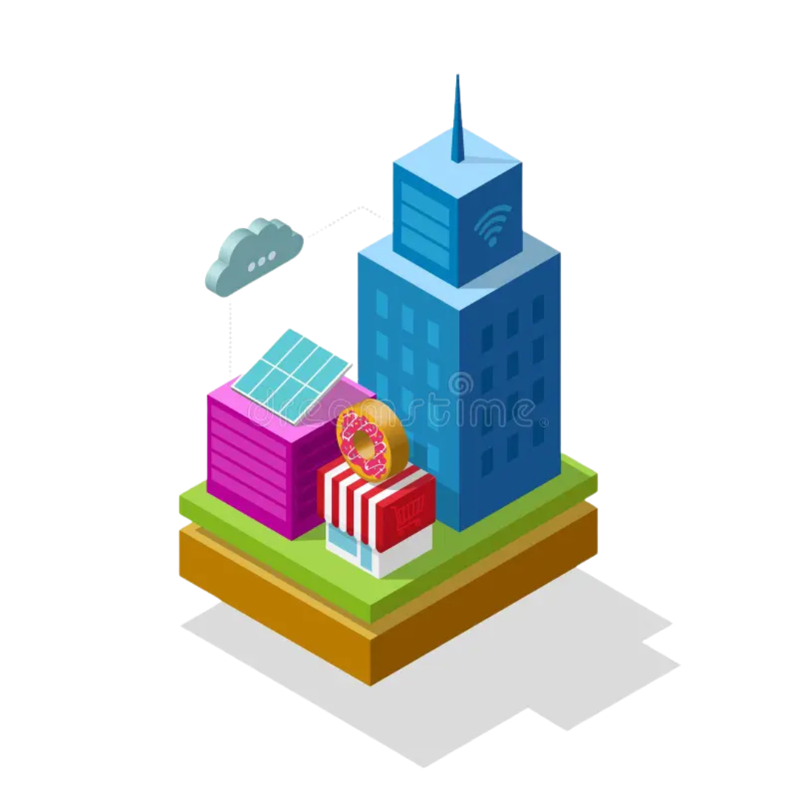
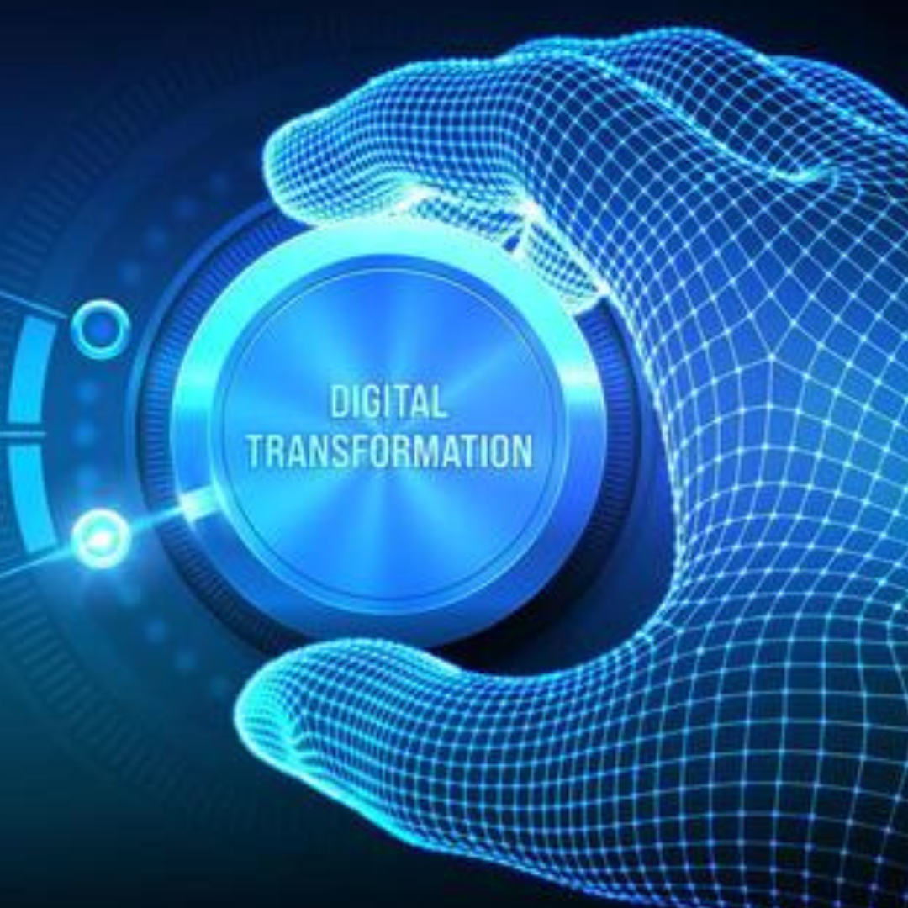
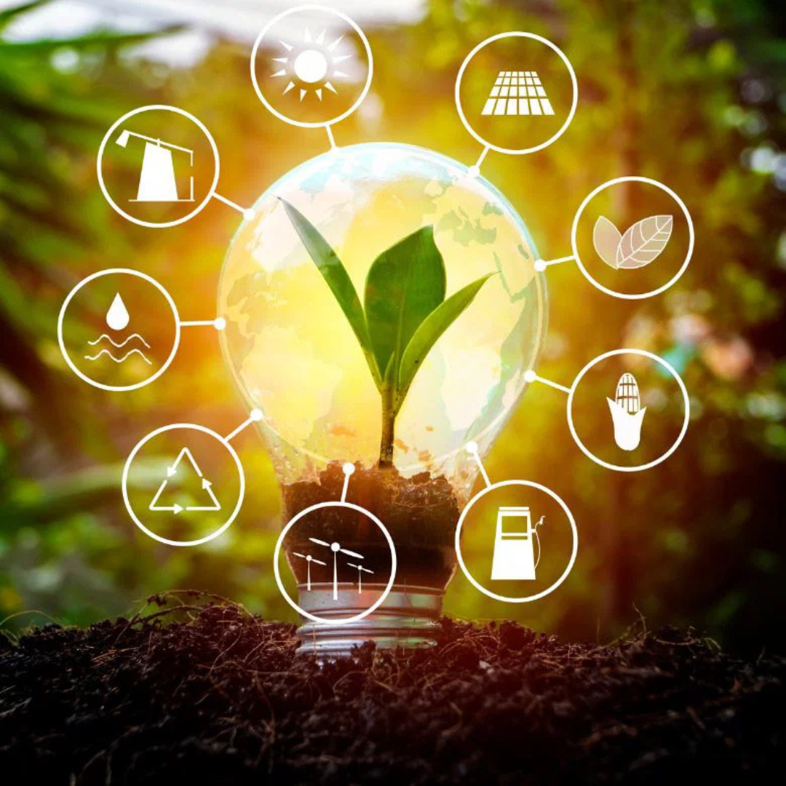
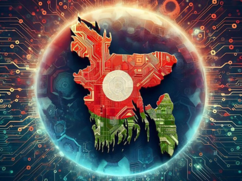
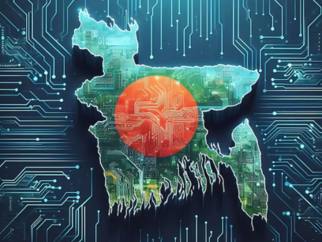

Pillars of "Bangladesh 2.0"

Innovation
Innovation is the ability to see change as an opportunity, not a threat. It transforms simple ideas into powerful solutions that shape the future.

Sustainability
Sustainability is the art of living and working in a way that meets our needs today without compromising the world for those who follow.

Infrastructure
Infrastructure is the backbone of growth, turning ambitious ideas into the physical reality that connects people, places, and progress.
Empowerment
Empowerment is the fuel that turns potential into purpose, giving individuals the tools and confidence to lead, innovate, and thrive.
The Vision of Future
Bangladesh 2.0 aims to redefine the nation’s trajectory by embracing cutting-edge technology, promoting inclusive growth, and ensuring sustainability. With initiatives in renewable energy, digital transformation, and robust infrastructure, the country is set to become a global model of development.

Digital Transformation
Digital transformation is the integration of digital technology into all areas of a business, fundamentally changing how you operate and deliver value to customers.

Green Energy
Green energy is any energy type that is generated from natural resources, such as sunlight, wind, or water, without harming the environment.
Modern Infrastructure
Modern infrastructure refers to advanced, integrated physical and digital systems, high-speed rail, and cloud networks—designed for efficiency and sustainability.
"Our task is to build a new Bangladesh, one that was won through the sacrifices of students. We must ensure that we do not miss this chance to create a country where the collective resolve of our youth defines our future as a responsive and responsible state." he youth are the most powerful segment of society. They can make the impossible possible, and our vision is to place them at the heart of our strategies for a new world." "Our goal is to conduct sufficient reform to ensure the sustainability of the next government, leading to a decent, clean, and enjoyable election."
Dr. Muhammad Yunus
Chief Adviser of the People's Republic of Bangladesh
Your Opinion Matters
| Questions | Select Your Opinion |
|---|---|
| Do you believe Bangladesh is on the right path toward becoming a developed nation? |
|
| Do you believe Bangladesh is one of the best country in the world as a developing nation? |
|
| Do you believe Bangladesh will go on the moon for contrasting with America as a next super power country? |
|
Recent News
Bangladesh 2.0 aims to redefine the nation’s trajectory by embracing cutting-edge technology, promoting inclusive growth, and ensuring sustainability. With initiatives in renewable energy, digital transformation, and robust infrastructure, the country is set to become a global model of development.

Bangladesh Launches New Satellite

Not until the creation and maintenance of decent conditions of life for all people are recognized and accepted as a common obligation of all people and all countries—not until then shall we, with a certain degree of justification, be able to speak of humankind as civilized
The Digital Revolution of Bangladesh: A Journey Toward Smart Bangladesh 2041.
Bangladesh is rapidly transforming into a digital powerhouse through massive investments in IT infrastructure and connectivity. With the goal of becoming a "Smart Bangladesh" by 2041, the nation is integrating AI-driven automation, 5G technology, and paperless government services to foster an inclusive and tech-savvy society.


Rising Tech Hub: Exploring Bangladesh’s Booming IT and Software Industry.
Emerging as a vibrant hub for the global ICT industry, Bangladesh is seeing record growth in software exports and IT-enabled services. With over 2,500 active startups and a massive pool of skilled youth, the country is bridging the digital divide and positioning itself as a top destination for global IT outsourcing.
Donate Today
"Bangladesh 2.0 is set to redefine the nation's future by integrating state-of-the-art technology with sustainable practices and inclusive growth. This new chapter focuses on advancing digital transformation, expanding renewable energy, and building a resilient, modern infrastructure."